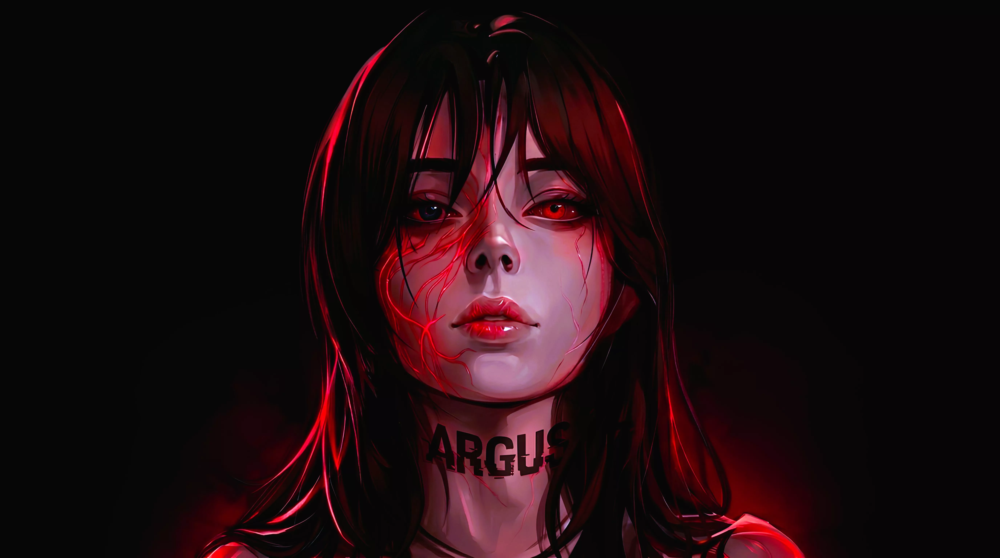

Logs vanish quietly
Text logs live on the same disk as everything else, and root can delete them. What is left is a gap the record itself cannot explain.
ARGUS hooks file, process, module and mount events at the kernel layer and chains each block to the one before it with SHA-256. The chain head is signed and anchored off the host, so an edit, a deletion or a reshuffle leaves a break that verification can name.
Every forensic tool assumes the evidence survived. An operator with root can make that assumption false in seconds.
Text logs live on the same disk as everything else, and root can delete them. What is left is a gap the record itself cannot explain.
A plain-text log carries no cryptographic link between its entries. Edit one line and the file still looks like a file nobody touched.
Most agents run as ordinary userspace processes, above the syscalls they observe. Whoever controls the machine can end the process before it writes.
ARGUS captures below the syscall and chains each event to the one before it, so a missing block is itself a recorded fact.
21 eBPF hooks record events where the syscall happens, before userspace gets control back. The sensor observes; it does not decide.
Each block carries the hash of the block before it. Change, delete or reorder one and every block after it fails verification — the chain names the break.
The chain head is signed and sent to a remote anchor on a schedule. A local operator can wipe the disk; the anchored head still describes what left the machine.
ARGUS runs in three layers. In userspace, the capture engine writes events to disk, the resolver resolves addresses and names, and argus-cli reads the record back. The kernel boundary carries the ring buffer and the control files that join the two sides. Below it sit an eBPF sensor on 21 hooks and a small shield module holding 4 kprobes for anti-tamper — both observe, and every decision is taken in userspace.
Any change to a written block invalidates the blocks after it, and verification names the first divergence.
Encryption is opt-in: enable it and the record is sealed at rest, leave it off and the chain stays readable for live forensics.
Thirteen independent enforcement layers, fail-closed by default. Removing one leaves the others in place.
Integrity alerts are written as blocks in the same chain, so removing one is a chain break like any other.
The daemon re-walks its own chain at a fixed interval and reports divergence without waiting for a query.
Every lock-down ships with a designed release path, so installing or releasing ARGUS does not require a maintenance window.

The chain is queryable. Ask it to verify itself, report its state, or list what left the host.
$ argus-cli verify ARGUS // chain verification blocks=1,284,921 chained=1,284,921 broken=0 head=9f3c1a04e7b2...c7d9 anchor=verified RESULT: CHAIN VERIFIED $ argus-cli status SHIELD: ACTIVE RELEASE: locked DAEMON: 525865 LICENSE: VALID (2027-10-06, 364 days) PASSWORD: SET $ argus-cli list --external 2026-10-06T22:14:03Z execve uid=0 pid=8841 /usr/bin/apt 2026-10-06T22:14:07Z connect uid=0 pid=8841 10.0.2.2:443 2026-10-06T22:15:41Z openat uid=1000 pid=9110 /home/operator/.ssh/id_ed25519 [!] 1 event matched a sensitive-path rule